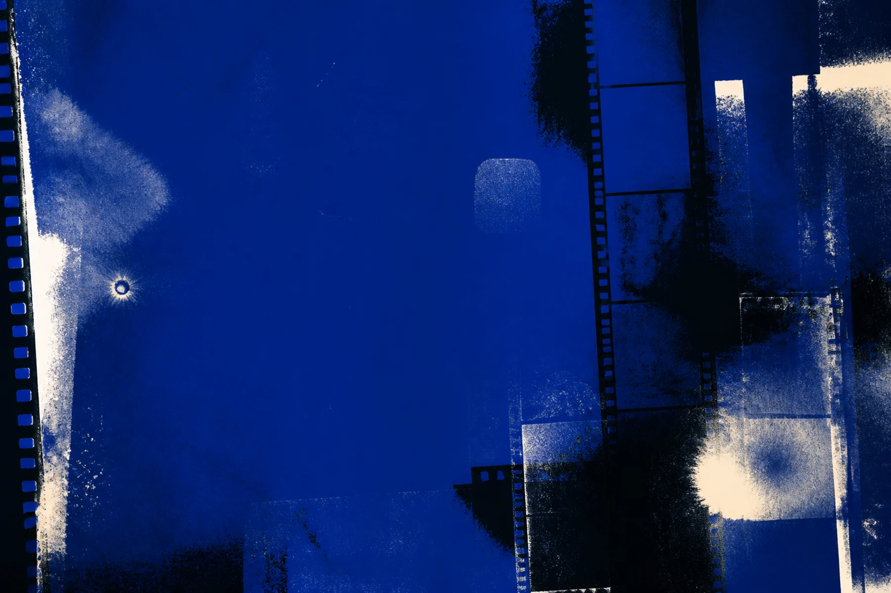

012026.08
倾斜的房间
Room, tilted

Independent film photography archive
“You don’t take a photograph. You make it.”
— Ansel Adams
黑白胶片摄影 · 按月保存
2026 — NOW
Monthly Archive / 月度档案
每个月是一卷独立的记录。日期不是注脚，而是照片与生活发生关系的坐标。
August / 八月
房间，以及被光触碰过的日常。
3 photographsRoom, tilted
A gesture by the window
The corridor keeps going
About / 关于
DOUZT 用黑白胶片保存不稳定的瞬间。这里按年月归档日常空间、身体痕迹与自然光，让每一卷照片保留它发生时的温度。